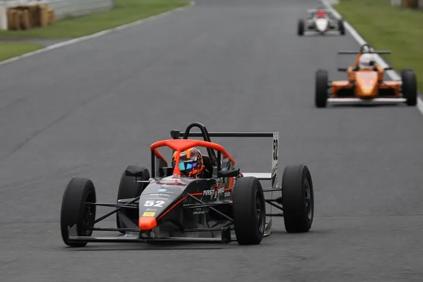

2026.09.27 SUN
FJ1500筑波・富士 第7戦
筑波サーキット
予選P1
決勝優勝
予選でポールポジションを獲得し、決勝もスタートからトップを守って優勝。ポール・トゥ・ウインを達成しました。
予選では路面の一部が濡れた難しいコンディションのなか、路面が乾いていくセッション後半を狙ってアタックしました。途中でタイヤの空気圧も調整し、ポールポジションを獲得しました。それでも「57秒台は出したかった」と、タイムにはまだ納得していません。
決勝では2位の選手に一時0.3秒差まで迫られましたが、この日のファステストラップを記録するなどして再び差を広げ、レース3年目にしてシリーズ戦初優勝を飾りました。「3年目の優勝で嬉しいです」。勝負どころは周回遅れへの対応で、一度縮まった差をもう一度広げるつもりで走りきりました。
モータースポーツフォーラムの記事を読む（決勝コメント）モータースポーツフォーラムの記事を読む（予選コメント）